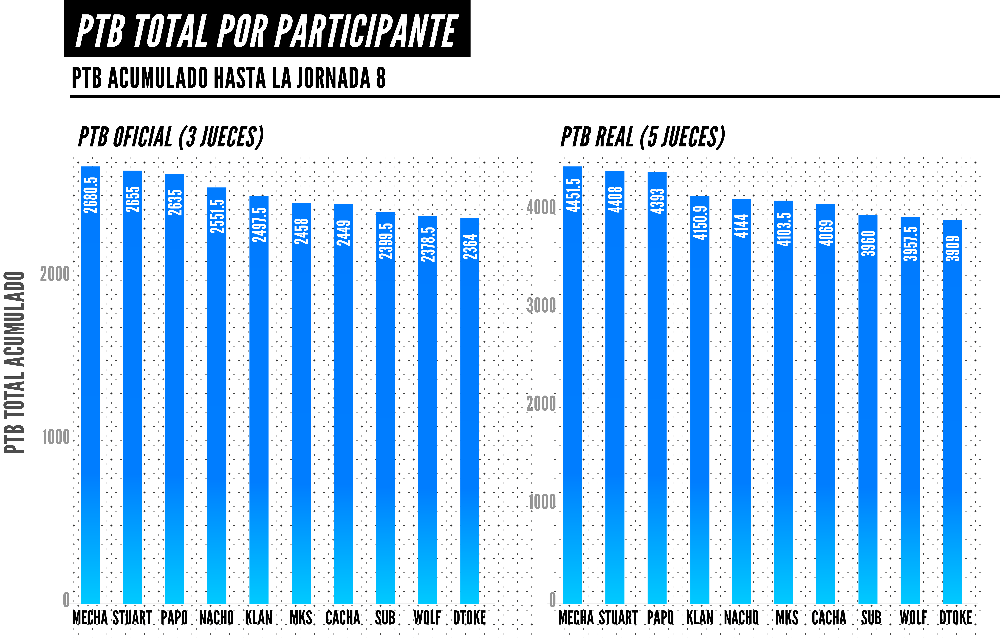

Hace apenas un mes disfrutábamos la transmisión de la jornada 8 de la FMS Argentina, una jornada regular, pero llena de destellos y marcada por la explosiva final adelantada entre Papo y Stuart. Las polémicas no hicieron falta en aquella jornada, pues como ya es costumbre entre las decisiones del jurado argentino, algunas de las votaciones emitidas fueron duramente criticadas por aficionados y analistas.
Una de las votaciones que generó más revuelo fue el resultado de la batalla entre Cacha y Dtoke, en donde a pesar de mostrar un bajo desempeño y un nivel inferior al de su rival, Dtoke logró hacerse de una réplica que posteriormente ganaría. Esto, como antes había sucedido con otros de sus enfrentamientos, desató una oleada de acusaciones que señalaban un posible sesgo a favor de Dtoke por parte de los jueces. Esta acusación no carecía de argumentos, pues a pesar de ser una las grandes figuras de la liga y del freestyle argentino, para muchos espectadores el desempeño de Dtoke dentro del formato de la liga dejó mucho que desear en esta temporada.
El bajo desempeño de Dtoke, sin embargo, no impidió que este se mantuviera a flote a lo largo de la temporada. Además de mantenerse a salvo del descenso, Dtoke no dejó que su poca destreza en el formato le impidiera hacerle frente (e incluso derrotar) a otros competidores más habilidosos. De hecho, Dtoke es el único participante que -según el criterio de los jueces- logró hacerle frente a cada uno de los integrantes del top tres de la liga (Stuart, Papo y Mecha) obteniendo al menos una réplica con cada uno de ellos, e incluso derrotando a Papo tras dos réplicas.
Ante las contradicciones entre el nivel mostrado por Dtoke y los resultados emitidos por los jueces de la liga, el equipo de Punteros del Freestyle decidió poner a prueba las dudas que distintas voces airearon respecto a la imparcialidad del jurado argentino. Para ello tuvimos el gusto de colaborar con el Corral de Jimmy, un canal dedicado al análisis del freestyle profesional con quien emprendimos una minuciosa investigación para explorar los puntos y los votos que el jurado argentino emitió hasta la jornada 8 de esta temporada.
Por medio de esta investigación, pudimos entender cómo a pesar de ser el peor PTB promedio, el peor PTB total y el peor PTB promedio por juez, Dtoke logró sumar suficientes puntos para por lo menos evitar el descenso. Para ello estudiamos los puntajes con los que los jueces usualmente valoraron a cada participante y la forma en la que sus puntuaciones habituales cambiaban al enfrentar a Dtoke. Por medio de esta comparación, pudimos observar cómo muchos competidores con frecuencia reciben menos puntos de lo habitual al enfrentar a Dtoke.
Para explicar mejor cómo se formaron y de dónde vienen estas conclusiones, a continuación les presentamos los principales datos y hallazgos de nuestra investigación.
Lo primero que examinamos en esta investigación fue el el PTB Oficial de los participantes de la FMS Argentina hasta la jornada 8. El PTB oficial registra los puntos que oficialmente cada participante obtiene tras cada enfrentamiento y, al promediarlo, nos permite conocer por lo general cuántos puntos obtiene cada participante de la temporada. De esta forma, lo primero que pudimos observar es que Dtoke era quien mantenía el nivel más bajo de la liga al registrar un promedio de solo 295.5 puntos por batalla, situándose a por lo menos 20 puntos del promedio de la liga.
Es importante aclarar que el PTB oficial es una puntuación que toma en cuenta las puntuaciones de solo tres jueces en lugar de los cinco que realmente puntuan cada batalla, ya que excluye dos votaciones: la del juez o jueza que haya dado el puntaje más bajo y la de quien haya dado el puntaje más alto. Esto es importante porque no sería imposible que, al tomar las dos calificaciones excluidas, el ranking anterior pudiera variar. No obstante, incluso si consideráramos el PTB "real" de los participantes (es decir el PTB que se obtendría al incluir los puntajes máximos y mínimos de cada batalla), Dtoke seguiría encontrándose al fondo de la clasificación, promediando un total de 488 puntos: 30 puntos por debajo del promedio general de la liga.
Además, Dtoke también se ubicaba en el fondo de la clasificación de esta temporada incluso si, en lugar de promedios, tomábamos en cuenta el total de PTBs que cada participante había acumulado hasta la jornada ocho. Ya sea considerando el PTB oficial o el PTB real que había sido acumulado por los participantes hasta la jornada 8, Dtoke era hasta ese momento el competidor con menos puntos sumados a pesar de que este no se encontraba en la zona de descenso.
De hecho, Dtoke también se encontraba como el peor puntuado si considerábamos los puntos individuales emitidos por los jueces. Lo anterior debido a que tras ocho jornadas, en promedio Dtoke obtenía solo 97 puntos de cada juez.
Para ser exactos, para cada uno de los jueces que ha participado en la FMS Argentina de manera regular, Dtoke tiene el peor o uno de los tres peores promedios de la liga. Para ello podemos observar las puntuaciones de jueces como Juancín, quien hasta la jornada 8 en promedio puntuaba a Dtoke con solo 92 puntos, dejándolo al fondo de su clasificación solo por detrás de Wolf y Sub.
A pesar del bajo nivel en términos de PTB que mostró durante ocho jornadas, Dtoke logró llegar a la última jornada relativamente seguro de la zona de descenso. Esto, en gran medida, se debió a la forma en la que el jurado votó y la manera en la que estos evaluaron a los rivales de Dtoke, ya que la mayoría de los participantes recibieron puntuaciones por debajo de su PTB promedio cuando se enfrentaron a Dtoke.
Para ejemplificar lo anterior, podemos tomar el caso de Cacha, quien precisamente en la jornada ocho enfrentó a Dtoke sumando un PTB 21 puntos menor a su PTB oficial promedio y 33 puntos menor a su PTB real promedio que había registrado en las fechas anteriores. Diferencias de este tamaño o mayores también ocurrieron con otros competidores como lo son Papo, MKS y Wolf.
Ahora bien, es importante señalar que en ocasiones este tipo de variaciones son normales; ya que con frecuencia existe una variación natural en donde cada participante puntúa un poco más o un poco menos de su promedio en cada batalla. Sin embargo, lo que destaca en el caso de las puntuaciones de la FMS Argentina, es que además de que la mayoría de los participantes obtuvieron un PTB por debajo de su promedio habitual al enfrentar a Dtoke, algunas de las variaciones en estos enfrentamientos son particularmente grandes y se alejan de la variación natural o esperada.
Para ejemplificar lo anterior, podemos retomar el caso de Cacha, quien a pesar de ser un participante relativamente constante que por lo general obtiene PTBs cercanos a su promedio, recibió muchos menos puntos de lo esperado cuando se enfrentó a Dtoke. Para ser exactos, la variación esperada de Cacha hasta la jornada ocho era de 8 puntos, lo que significaba que este puntuaba a no más de 8 puntos de su PTB promedio (ya sea 8 puntos por debajo o por encima de su promedio). No obstante, al enfrentar a Dtoke, Cacha obtuvo una puntuación por lo menos 20 puntos por debajo de su PTB promedio.
La siguiente gráfica muestra la variación esperada de cada competidor para contrastar con la variación que se registró al enfrentarse a Dtoke:
Este patrón en donde cada participante recibía menos puntos que lo que habitualmente registraban es incluso más visible cuando analizamos las votaciones individuales de cada juez. Al comparar el PTB promedio que cada juez asignaba a cada participante contra el PTB que realmente obtuvieron al enfrentar a Dtoke, pudimos observar que la mayoría de los jueces asignaba un PTB menor al promedio que ellos mismos tenían del participante que se enfrentaba a Dtoke.
Ejemplo de ello son las puntuaciones que MKS recibió al enfrentar a Dtoke, en donde por ejemplo Tink le otorgó 91 puntos, a pesar de que en el resto de sus batallas este mismo juez en promedio había puntuado a MKS con 112.5 puntos con una variación promedio de 5 puntos. Esto significa que este juez dictaminó que el puntaje de MKS estuvo 22 puntos por debajo de su promedio habitual, a pesar de que este mismo juez señala que, en promedio, MKS se aleja de su PTB promedio solo por 5 puntos.
Una vez más, es importante señalar que en principio estas diferencias pueden ser normales, ya que cada juez puede determinar que en una batalla específica el score de un participante estuvo por arriba o por debajo de su promedio habitual. En el caso de MKS, este competidor efectivamente pudo haber tenido un rendimiento muy por debajo de lo habitual al enfrentar a Dtoke. Sin embargo, el tamaño de la diferencia es tan grande que lo anterior resulta sospechoso.
De esta forma, en varias de las batallas de Dtoke, la gran mayoría de los jueces determinó que su oponente estuvo por debajo del promedio que suelen tener. Además, por lo menos en 15 casos (incluyendo el ya mencionado de MKS) los oponentes de Dtoke no tan solo estuvieron por debajo del promedio que cada juez suele asignarles, sino que la diferencia era mayor a la variación respecto promedio que se esperaba.
Precisamente es aqui donde reside la inconsistencia del jurado argentino, pues las variaciones encontradas en este análisis señalan que, incluso considerando las interpretaciones individuales y subjetivas de cada juez, por lo general el jurado de esta temporada evaluó a cada participante de una forma distinta cuando estos se enfrentaron a Dtoke.
Esta investigación parte del principio de que los puntajes recibidos en una batalla no definen la calidad de una improvisación. Creemos, sin embargo, que el análisis de la información que estos puntajes nos brindan permiten que conozcamos el tipo de competidores e improvisación que los jueces más valoran dentro de cada liga, transparentando con ello sus criterios de jueceo y seguir contribuyendo a la evolución de los freestylers. De igual forma, los resultados presentados no asumen ni pretenden señalar ningún tipo de influencia fraudulenta por parte de jueces o participantes.
La recopilación de la información se realizó por medio de la consulta de sitios web especializados (Marca, Mundo Freestyle, Todo Batallas) y la cuenta oficial de la FMS Argentina en twitter (@fms_argentina) a quienes damos créditos correspondientes y cuya labor agradecemos.
Con el objetivo de disminuir el riesgo de cometer errores en nuestros cálculos y comparaciones, el análisis de esta investigación se realizó por medio de códigos de programación automatizados elaborados por uno de nuestros colaboradores.
Finalmente, agradecemos la participación de cada unx de nuestros colaboradores: